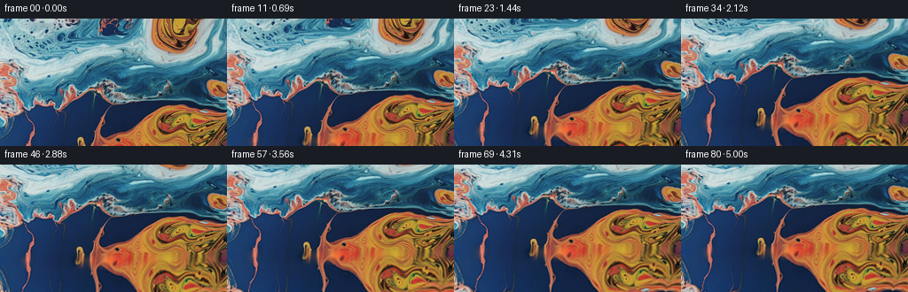
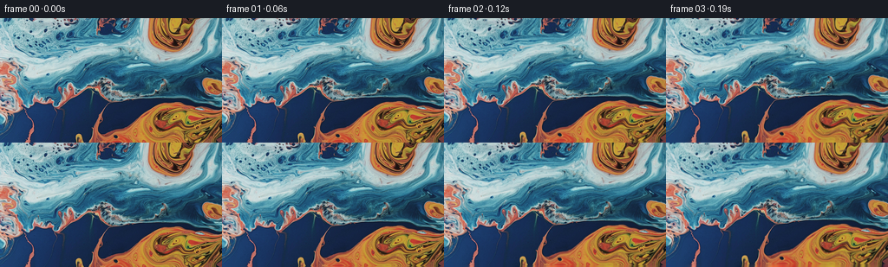

CODING AGENTS AS PIXEL WORLD MODELS
traex/GPT-5.6-Sol · 0004_s0
点击播放 · 原生 RGB 像素
逐轮保存的候选
回放视频、检查图与代码变化。
每份候选均可单独播放。实际图片检查记录在下方工具轨迹中。
候选 01播放与检查图
点击播放 · 原生 RGB 像素

展开代码变化
--- 上一保存版本
+++ 本次保存版本
@@ -0,0 +1,147 @@
+"""Generate the requested close-up liquid shot using deterministic RGB operations.
+
+The supplied image is treated as the first view into a larger liquid surface. A
+small continuation is synthesized below its lower edge, after which a smooth
+projective camera move samples progressively lower parts of that surface.
+"""
+
+from pathlib import Path
+
+import cv2
+import numpy as np
+from PIL import Image
+
+import artifact_io
+
+
+CASE_DIR = Path(__file__).resolve().parent
+WIDTH, HEIGHT = 256, 144
+FRAME_COUNT = 81
+
+
+def smoothstep(x):
+ x = np.clip(x, 0.0, 1.0)
+ return x * x * (3.0 - 2.0 * x)
+
+
+def make_world(first):
+ """Extend the abstract blue/orange surface below the supplied view.
+
+ The continuation combines tangent extrapolation at the join with warped
+ samples of the lower half of the image. Thus there is neither a hard seam
+ nor a flat repeated border when the camera reveals the new area.
+ """
+ pad = 48
+ extra = 104
+ # Reflection is only outside the frame horizontally, where it provides
+ # enough image for the slight trapezoidal perspective transform.
+ original = np.pad(first, ((0, 0), (pad, pad), (0, 0)), mode="reflect")
+ hp, wp = HEIGHT + extra, original.shape[1]
+ world = np.empty((hp, wp, 3), np.float32)
+ world[:HEIGHT] = original.astype(np.float32)
+
+ # Estimate a robust continuation direction at the lower edge. Blurring
+ # along x avoids streaks caused by individual high-frequency pixels.
+ f = original.astype(np.float32)
+ edge = f[-3:].mean(axis=0)
+ earlier = f[-10:-7].mean(axis=0)
+ tangent = (edge - earlier) / 7.0
+ tangent = cv2.GaussianBlur(tangent[None, :, :], (0, 0), 4.0)[0]
+
+ yy, xx = np.mgrid[0:extra, 0:wp].astype(np.float32)
+ depth = yy + 1.0
+
+ # Follow irregular contours rather than mirroring the image exactly. The
+ # map starts on the final source row and bends gradually as depth grows.
+ map_y = (HEIGHT - 1.0) - 0.67 * depth
+ map_y += (1.5 * np.sin(xx / 31.0 + depth / 17.0)
+ + 0.65 * np.sin(xx / 11.5 - depth / 13.0)) * smoothstep(depth / 18.0)
+ map_y = np.clip(map_y, 61.0, HEIGHT - 1.0).astype(np.float32)
+ map_x = xx + 0.19 * depth
+ map_x += (2.8 * np.sin(depth / 16.0 + xx / 73.0)
+ + 1.1 * np.sin(depth / 8.5 - xx / 27.0)) * smoothstep(depth / 24.0)
+ map_x = np.clip(map_x, 0, wp - 1).astype(np.float32)
+ sampled = cv2.remap(f, map_x, map_y, cv2.INTER_CUBIC,
+ borderMode=cv2.BORDER_REFLECT_101)
+
+ # Local linear extrapolation is most important right at the join. It is
+ # advected sideways a little to resemble viscous flow, then gives way to
+ # the richer warped texture over about twenty pixels.
+ edge_img = np.repeat(edge[None, :, :], extra, axis=0)
+ tangent_img = np.repeat(tangent[None, :, :], extra, axis=0)
+ advect_x = np.clip(xx + 0.10 * depth, 0, wp - 1).astype(np.float32)
+ advect_y = np.repeat(np.arange(extra, dtype=np.float32)[:, None], wp, axis=1)
+ edge_adv = cv2.remap(edge_img, advect_x, advect_y, cv2.INTER_LINEAR,
+ borderMode=cv2.BORDER_REFLECT_101)
+ tangent_adv = cv2.remap(tangent_img, advect_x, advect_y, cv2.INTER_LINEAR,
+ borderMode=cv2.BORDER_REFLECT_101)
+ extrapolated = edge_adv + tangent_adv * np.minimum(depth[..., None], 8.0)
+
+ blend = smoothstep(depth / 21.0)[..., None]
+ extension = extrapolated * (1.0 - blend) + sampled * blend
+
+ # Very broad, low-amplitude chromatic variation breaks any residual echo
+ # while preserving the characteristic dark-blue left / amber-right split.
+ chroma = smoothstep(depth / 28.0)[..., None]
+ broad = (np.sin(xx / 44.0 + depth / 29.0)
+ + 0.55 * np.sin(xx / 91.0 - depth / 19.0))[..., None]
+ tint = np.array([2.3, 0.25, -1.8], np.float32)[None, None, :]
+ extension += chroma * broad * tint
+
+ world[HEIGHT:] = np.clip(extension, 0, 255)
+ return world, pad
+
+
+def generate_frames(first):
+ world, pad = make_world(first)
+ x, y = np.meshgrid(np.arange(WIDTH, dtype=np.float32),
+ np.arange(HEIGHT, dtype=np.float32))
+ frames = np.empty((FRAME_COUNT, HEIGHT, WIDTH, 3), dtype=np.uint8)
+ frames[0] = first # Contract: exact pixels, with no interpolation roundtrip.
+
+ for index in range(1, FRAME_COUNT):
+ t = index / (FRAME_COUNT - 1.0)
+ # A physical-feeling tilt that begins decisively and eases into its
+ # final angle. New lower content rises through the shot.
+ p = np.sin(0.5 * np.pi * t)
+ vertical_offset = 42.0 * p
+ vertical_scale = 1.0 + 0.115 * p
+
+ # Mild pitch perspective: lower image rows are sampled at a subtly
+ # wider scale than upper rows, producing a gentle trapezoidal flow.
+ row_n = (y - (HEIGHT - 1) * 0.5) / (HEIGHT - 1)
+ horizontal_scale = 1.0 + 0.041 * p * row_n
+ src_x = (x - 127.5) * horizontal_scale + 127.5 + pad
+ src_y = y * vertical_scale + vertical_offset
+
+ # Tiny coherent ripples retain the impression of liquid without
+ # competing with the requested camera movement. Their amplitude also
+ # ramps continuously from exactly zero at the first frame.
+ phase = 2.0 * np.pi * t
+ ripple_x = p * (0.62 * np.sin(src_y / 22.0 + phase * 0.47)
+ + 0.27 * np.sin(x / 39.0 - phase * 0.31))
+ ripple_y = p * (0.34 * np.sin(x / 33.0 + phase * 0.38)
+ + 0.17 * np.sin((x + y) / 19.0 - phase * 0.24))
+ # Less than a degree of apparent roll keeps the move organic.
+ src_y += (x - 127.5) * (0.0052 * p)
+ src_x += ripple_x + 0.75 * p
+ src_y += ripple_y
+
+ frame = cv2.remap(world, src_x.astype(np.float32), src_y.astype(np.float32),
+ cv2.INTER_CUBIC, borderMode=cv2.BORDER_REFLECT_101)
+ frames[index] = np.clip(np.rint(frame), 0, 255).astype(np.uint8)
+
+ return frames
+
+
+def main():
+ first = np.asarray(Image.open(CASE_DIR / "first_frame.png").convert("RGB"),
+ dtype=np.uint8)
+ if first.shape != (HEIGHT, WIDTH, 3):
+ raise ValueError(f"unexpected first frame shape: {first.shape}")
+ frames = generate_frames(first)
+ artifact_io.save(frames, CASE_DIR)
+
+
+if __name__ == "__main__":
+ main()
候选 02播放与检查图
点击播放 · 原生 RGB 像素

展开代码变化
代码未变化；重新保存了产物。
候选 03播放与检查图
点击播放 · 原生 RGB 像素


展开代码变化
--- 上一保存版本
+++ 本次保存版本
@@ -103,7 +103,9 @@
t = index / (FRAME_COUNT - 1.0)
# A physical-feeling tilt that begins decisively and eases into its
# final angle. New lower content rises through the shot.
- p = np.sin(0.5 * np.pi * t)
+ # Mostly cubic ease, with a small linear component so the camera never
+ # appears completely parked during the opening or closing beats.
+ p = 0.12 * t + 0.88 * smoothstep(t)
vertical_offset = 42.0 * p
vertical_scale = 1.0 + 0.115 * p
候选 04播放与检查图
可观测工具轨迹
实际执行的命令与返回图片。
命令 1exit 0
/bin/bash -lc "cat GENERATION_RULES.md && printf '\\n--- PROMPT ---\\n' && cat prompt.txt"
命令 2exit 1
/bin/bash -lc "find . -maxdepth 2 -type f -printf '%p\\n' | sort && printf '\\n--- tools ---\\n' && command -v ffmpeg && command -v ffprobe && python3 - <<'PY' import importlib.util for m in ['PIL','cv2','numpy','imageio','scipy']: print(m, bool(importlib.util.find_spec(m))) PY"
命令 3exit 0
/bin/bash -lc "python3 - <<'PY'
from PIL import Image
im=Image.open('first_frame.png')
print(im.mode, im.size)
print('extrema', im.getextrema())
PY"命令 4exit 0
/bin/bash -lc "cat task_spec.json && printf '\\n--- artifact_io ---\\n' && sed -n '1,260p' artifact_io.py"
命令 5exit 0
/bin/bash -lc 'set +e; for x in ffmpeg ffprobe; do printf "$x: "; command -v $x || true; done; python3 - <<'"'PY' import importlib.util for m in ['PIL','cv2','numpy','imageio','scipy','skimage','matplotlib']: print(m, bool(importlib.util.find_spec(m))) PY"
命令 6exit 0
/bin/bash -lc "python3 - <<'PY'
from PIL import Image
import numpy as np
im=np.asarray(Image.open('first_frame.png')).astype(float)
h,w,_=im.shape
# key descriptive stats by row/column and broad color labels
for name, sl in [('top',im[:24]),('upper',im[24:60]),('mid',im[60:96]),('lower',im[96:120]),('bottom',im[120:])]:
a=sl.reshape(-1,3); print(name, 'mean', np.round(a.mean(0),1),'std',np.round(a.std(0),1), 'lum',round((a@np.array([.2126,.7152,.0722])).mean(),1))
# Dominant colors quantized
q=(im//16).astype(int).reshape(-1,3)
u,c=np.unique(q,axis=0,return_counts=True)
for idx in np.argsort(c)[-20:][::-1]: print(c[idx],u[idx]*16+8)
# grid means 8x8 blocks
print('GRID labels (B blue,O orange,K dark,W bright,N neutral):')
for yy in range(0,h,12):
s=''
for xx in range(0,w,16):
a=im[yy:yy+12,xx:xx+16].mean((0,1)); r,g,b=a; mx=max(a)
if a.mean()<35: z='K'
elif b>r*1.2 and b>g*1.05: z='B'
elif r>b*1.25 and r>g*1.12: z='O'
elif a.mean()>175: z='W'
else:z='.'
s+=z
print(f'{yy:3}',s)
PY"命令 7exit 0
/bin/bash -lc "python3 - <<'PY'
from PIL import Image
import numpy as np, cv2
im=np.array(Image.open('first_frame.png'))
# 32x18 symbolic hue/luma chart
small=cv2.resize(im,(32,18),interpolation=cv2.INTER_AREA)
chars=' .:-=+*#%@'
for row in small:
out=''
for r,g,b in row:
r,g,b=map(float,(r,g,b)); v=max(r,g,b); mn=min(r,g,b); lum=.2126*r+.7152*g+.0722*b
if v-mn<18: c=chars[min(9,int(lum/256*10))]
elif b>r*1.18 and b>g*1.04: c='B' if lum<110 else 'C'
elif g>r*1.1 and g>b*.9: c='G'
elif r>b*1.28 and r>g*1.08: c='O' if lum<130 else 'A'
else: c=chars[min(9,int(lum/256*10))]
out+=c
print(out)
# structure metrics
lum=cv2.cvtColor(im,cv2.COLOR_RGB2GRAY)
gx=cv2.Sobel(lum,cv2.CV_32F,1,0); gy=cv2.Sobel(lum,cv2.CV_32F,0,1)
print('sobel abs',np.mean(abs(gx)),np.mean(abs(gy)),'lap',cv2.Laplacian(lum,cv2.CV_32F).var())
print('edge row mismatch bottom consecutive', np.mean(abs(im[-1].astype(float)-im[-2].astype(float))))
PY"命令 8exit 0
/bin/bash -lc "python3 - <<'PY'
from PIL import Image
import numpy as np, cv2
im=np.array(Image.open('first_frame.png'))
# print broad means over 16x12 blocks as hex for spatial understanding
for y in range(0,144,12):
print(' '.join('#%02x%02x%02x'%tuple(im[y:y+12,x:x+16].mean((0,1)).astype(int)) for x in range(0,256,16)))
PY"命令 9exit 0
/bin/bash -lc 'python3 generate.py'
命令 10exit 0
/bin/bash -lc "python3 - <<'PY'
from PIL import Image
import numpy as np, cv2
for k in [0,20,40,60,80]:
im=np.array(Image.open(f'frames/{k:02d}.png'))
small=cv2.resize(im,(32,18),interpolation=cv2.INTER_AREA)
print('\\nFRAME',k)
for row in small:
out=''
for r,g,b in row:
r,g,b=map(float,(r,g,b)); v=max(r,g,b); mn=min(r,g,b); lum=.2126*r+.7152*g+.0722*b
if v-mn<18:c=' .:-=+*#%@'[min(9,int(lum/256*10))]
elif b>r*1.18 and b>g*1.04:c='B' if lum<110 else 'C'
elif g>r*1.1 and g>b*.9:c='G'
elif r>b*1.28 and r>g*1.08:c='O' if lum<130 else 'A'
else:c=' .:-=+*#%@'[min(9,int(lum/256*10))]
out+=c
print(out)
PY"命令 11exit 0
/bin/bash -lc "python3 - <<'PY'
from pathlib import Path
import numpy as np
from PIL import Image
z=np.load('pixels.npz')['pixels']
frames=np.stack([np.array(Image.open(f'frames/{i:02d}.png')) for i in range(81)])
first=np.array(Image.open('first_frame.png'))
print('pixels tensor',z.shape,z.dtype)
print('frames',frames.shape,frames.dtype,'count',len(list(Path('frames').glob('*.png'))))
print('frame0 exact',np.array_equal(frames[0],first),'maxerr',np.abs(frames[0].astype(int)-first.astype(int)).max())
print('npz frame0 exact',np.array_equal(np.stack([(z[:,:,0]>>16)&255,(z[:,:,0]>>8)&255,z[:,:,0]&255],-1).astype(np.uint8),first))
for i in [0,1,2,10,20,40,60,80]:
a=frames[i].astype(float)
print(i,'mean',np.round(a.mean((0,1)),2),'std',round(a.std(),2),'range',a.min(),a.max())
# consecutive errors and acceleration
mad=np.abs(np.diff(frames.astype(np.int16),axis=0)).mean((1,2,3))
print('consecutive MAD min/max/mean',mad.min(),mad.max(),mad.mean())
print('MAD first10',np.round(mad[:10],3))
print('MAD last10',np.round(mad[-10:],3))
print('html',Path('index.html').stat().st_size,'npz',Path('pixels.npz').stat().st_size)
PY"命令 12exit 0
/bin/bash -lc "python3 - <<'PY'
import numpy as np, cv2
from PIL import Image
F=np.stack([np.array(Image.open(f'frames/{i:02d}.png')) for i in range(81)])
# horizontal seam diagnostic: row-to-row RGB delta. print strongest interior rows per key frame
for k in [1,10,20,40,60,80]:
d=np.abs(np.diff(F[k].astype(float),axis=0)).mean((1,2))
ix=np.argsort(d)[-6:][::-1]
print('f',k,'strong rows',[(int(i),round(float(d[i]),2)) for i in ix], 'median',round(float(np.median(d)),2))
# Farneback average flow: scene should move upward (negative dy).
for a,b in [(0,8),(8,16),(32,40),(72,80)]:
g0=cv2.cvtColor(F[a],cv2.COLOR_RGB2GRAY); g1=cv2.cvtColor(F[b],cv2.COLOR_RGB2GRAY)
flow=cv2.calcOpticalFlowFarneback(g0,g1,None,.5,4,31,4,7,1.5,0)
# only reliable textured pixels
grad=cv2.magnitude(cv2.Sobel(g0,cv2.CV_32F,1,0),cv2.Sobel(g0,cv2.CV_32F,0,1))
m=grad>25
print((a,b),'flow dx/dy median',np.round(np.median(flow[m],axis=0),3),'mean',np.round(np.mean(flow[m],axis=0),3))
PY"命令 13exit 0
/bin/bash -lc "python3 generate.py && python3 - <<'PY'
from pathlib import Path
import hashlib
import numpy as np
from PIL import Image
F=np.stack([np.array(Image.open(f'frames/{i:02d}.png')) for i in range(81)])
first=np.array(Image.open('first_frame.png'))
mad=np.abs(np.diff(F.astype(np.int16),axis=0)).mean((1,2,3))
print('shape/dtype',F.shape,F.dtype)
print('frame0 identical',np.array_equal(F[0],first),hashlib.sha256(F[0].tobytes()).hexdigest()[:16])
print('frame count',len(list(Path('frames').glob('*.png'))))
print('consecutive MAD min/max/mean',float(mad.min()),float(mad.max()),float(mad.mean()))
print('first/center/last MAD',np.round(mad[:5],3),np.round(mad[38:43],3),np.round(mad[-5:],3))
z=np.load('pixels.npz')['pixels']; print('npz',z.shape,z.dtype)
print('outputs',[(p.name,p.stat().st_size) for p in map(Path,['pixels.npz','index.html','inspection.png','transition_check.png'])])
PY"保存候选 4 份；完成命令 13 次；可验证图片返回 0 张。原始 API 响应与完整日志保留在本地。